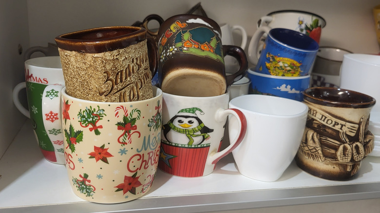

Detection and local validation use OWL-ViT in your browser. This second pass looks at only the cropped candidate pixels. It may reject valid items or fail to reject decorations and background. Candidate outlines appear immediately as dashed yellow boxes. Local validation progressively changes confirmed objects to solid yellow boxes and hides rejected candidates. Up to 12 candidates are validated per scan. After validation, up to six items are automatically categorized locally in priority order. When category identification is ambiguous, the research card shows up to three plausible visual matches and their relative scores, not confidence probabilities. Category matches do not establish makers, patterns, ages, authenticity, or prices.
No resale-pricing source is connected yet. Yellow means no verified sold-price evidence. No green or blue valuations are invented.
Use the photo upload or camera, scan, tap an outline, and save items as favorites. “Add / redraw item” lets you draw a box over something the model missed.